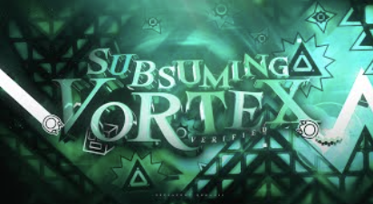

Gravity and Pulse

"The hardest nine circles level... at the time"
Subsuming Vortex serves as the modern apex of the "Nine Circles" trend. Created by Volumni & Renn241, it takes the classic flashing wave effect and pushes it to the absolute limit of human reaction time.
Unlike its predecessors, this artifact introduces rapid, disorienting gravity portals within the wave sections. This forces the player to constantly recalculate their trajectory while navigating tight, pulse-syncopated corridors at extreme speeds.
Verified By
[TCD] Cursed
Verifier
Audio Track
Sine Wavs
by Rukkus
Artifact ID
127997391
Complexity
71,248 Objects
Recorded Victors (100%)
Only one entity has fully synchronized with the vortex.
- [67] Zoink Sole Victor